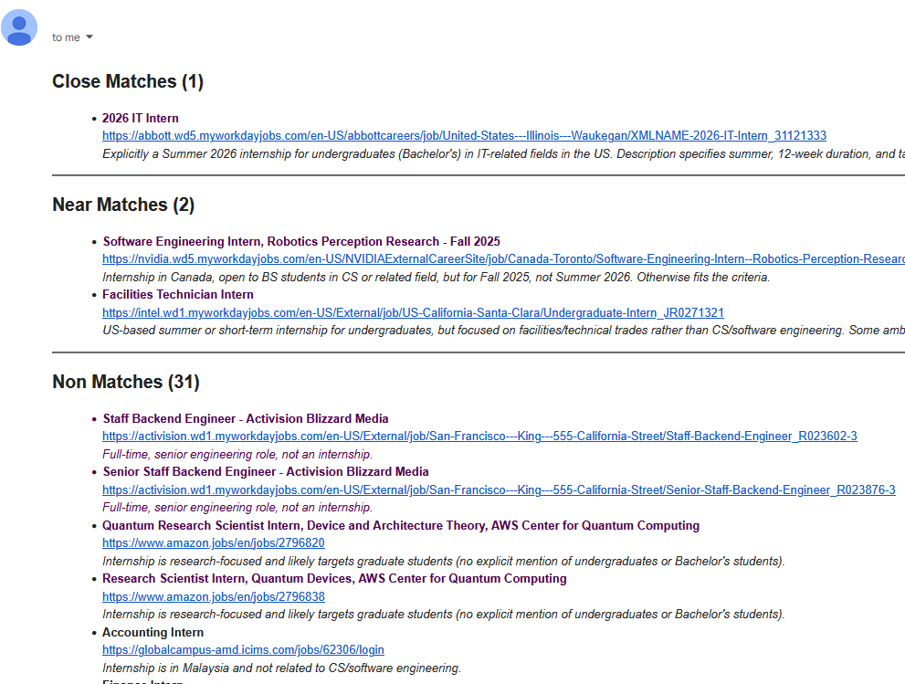

Internship Scanner (Summer 2026)
Github repo
Email Screenshot

Inspiration
There are several companies that I would love to work at over the 2026 summer. However, these positions open up at random times in the Fall and Spring. It varies for each company-- some open as early as August while others open as late as March. Once an application is open, the window is tight. Because of this, I had made it a weekly habit to check the twenty or so sites on my radar for opening positions. After a few weeks of checking, I thought I could do better by creating an automated script to scan for summer 2026 internship positions.
Most job aggregate sites (like LinkedIn) have their own host of issues or paywalls, but a flaw they all share is a lack of specificity for internship timing. None of these sites allow for filtering based on Summer/Fall/Spring internship. It would be a nice feature, but I suppose the first thing they need to work on is filtering for internships in general. Most of these sites will throw me entry level positions even when they have a filter option for internships. Anyways, the failings of other job aggregate programs is not the point of me writing here (even if it was the inspiration).
Process
This process contains use of OpenAI, but only for natural language filtering of job descriptions. The process of fetching and sorting job data before that is done through traditional python scripting. It was quite a hassle to write the fetch scripts, as each site has its own way of fetching data. The two most distinct approaches are: an API endpoint and HTML scraping. The first approach is needed for dynamic sites which load in their job data while the second approach is needed for static sites which list their jobs in HTML.
The pipeline script makes the process clear enough with good function names, but to define it:
-
Fetch all messy job information and sort it into a structured
Jobdictionary -
Fetch the descriptions of all the jobs by accessing their listed
urlproperty. -
Filter the jobs, using OpenAI, into three categories:
close_match,near_match, andnon_match -
Dispatch an email to me with a list of all the jobs
I had decided to email myself all the jobs as a way to allow myself to look at the jobs manually. The OpenAI response contains reasoning for each job, making it easy for me to verify whether or not its reasoning is correct. For example, it might say "Internship is for PhD students only", then I can check the URL and see if that's true. The jobs are also saved locally (before being filtered) so I can easily check the jobs if I feel like OpenAI is missing something. Overall, I wanted to make sure that, with this project, I did not trust OpenAI too heavily. It only handles filtering and it does so in a non-destructive way.